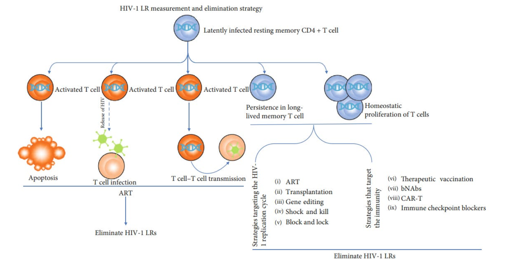

In the fight against HIV/AIDS, one of the biggest challenges has been the presence of latent reservoirs (LRs) of the virus within the body. These reservoirs, composed of infected cells lying dormant and undetected, present a major obstacle to achieving a cure. However, recent advances in research have brought new hope, with innovative strategies showing promise in targeting and eliminating these elusive reservoirs. In this scientific news report, we delve into the latest developments in understanding and combating HIV-1 latent reservoirs.
Novel Strategies
Over the past decade, significant progress has been made in devising strategies to tackle HIV-1 latent reservoirs. Among these, the "shock and kill" therapy has garnered considerable attention. This approach involves using latency-reversing agents (LRAs) to activate dormant HIV-infected cells, followed by immune-mediated clearance to eradicate the virus. However, validation studies have revealed challenges, with no significant decrease in the time to viral rebound observed and persistent virus reactivation in vivo. Consequently, there is a pressing need to enhance the killing effect against HIV-1 latent reservoirs and explore alternative methods.
Novel strategies in HIV/AIDS research, including immune checkpoint inhibitors, gene editing tools like CRISPR-Cas9, and CAR-T cell therapy, show significant promise in addressing the challenge of HIV-1 latent reservoirs. Immune checkpoint inhibitors function by targeting regulatory pathways that dampen immune responses. By blocking these pathways, these inhibitors have the potential to enhance the immune system's ability to recognize and eliminate HIV-infected cells, thereby reducing the size of the HIV-1 latent reservoirs through immune-mediated control. Gene editing tools such as CRISPR-Cas9 offer a highly precise method for editing viral sequences integrated into the host genome. This technology enables scientists to disrupt viral latency by directly targeting and modifying HIV DNA, potentially paving the way for a cure by preventing viral reactivation. Additionally, CAR-T cell therapy involves the engineering of T cells to express chimeric antigen receptors (CARs) that specifically recognize and target HIV-infected cells for elimination. By genetically modifying T cells in this way, CAR-T cell therapy offers a promising approach to eradicating latent reservoirs by selectively targeting and destroying HIV-infected cells.

Challenges and Future Directions
While these approaches offer renewed hope for an HIV-1 cure, challenges remain. Post-treatment complications, including adverse effects weakening the immune response, pose obstacles to patient compliance and accurate assessment of therapeutic efficacy. Additionally, the complexity of LR quantification, influenced by factors such as viral genome variability and the prevalence of defective proviruses, underscores the need for comprehensive research and standardized measurement techniques.
In light of these challenges, a shift towards combined therapies is gaining momentum. By synergistically leveraging multiple anti-HIV-1 agents, such as LRAs in conjunction with therapeutic vaccination, researchers aim to significantly reverse HIV-1 LR and achieve long-term ART-free viral remission. This holistic approach acknowledges the multifaceted nature of HIV-1 infection and seeks to address it through a comprehensive treatment strategy.
Advanced imaging techniques and genetic manipulation tools offer promising avenues for advancing our understanding of HIV-1 latent reservoirs. Live-cell imaging technologies, such as confocal microscopy and fluorescence resonance energy transfer (FRET), enable real-time visualization of molecular events during latent reservoir responses. Additionally, genetic approaches, including mutant analysis and gene editing technologies like CRISPR-Cas9, facilitate the identification and characterization of key genes and signaling pathways underlying these reservoirs.
Conclusion
In conclusion, the quest for an HIV-1 cure has seen remarkable progress in recent years, with novel strategies offering new avenues for targeting and eliminating latent reservoirs. While challenges persist, the collective efforts of researchers worldwide continue to drive innovation and discovery in the field of HIV/AIDS research. By harnessing the power of science and collaboration, we inch closer towards the ultimate goal of an HIV-1 cure and a world free from the burden of this devastating disease.